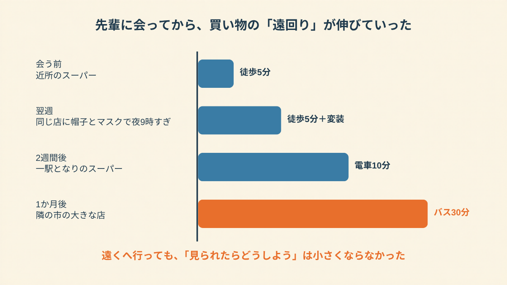
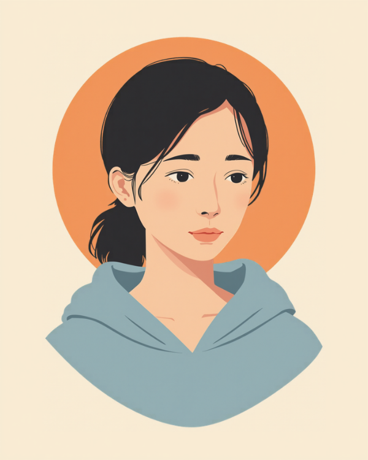
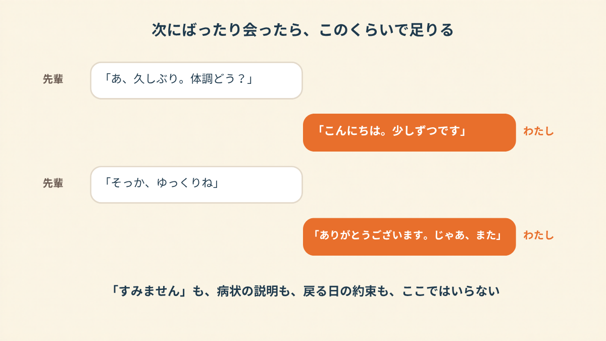

「あれ、〇〇さん？」
振り向いたら、同じ課の先輩が、カゴを持って立っていました。
休職して2ヶ月。会社の人の顔を見たのは、あの日が最初です。
私の口から出たのは、「すみません、ご迷惑おかけして、すみません」。
スーパーの冷蔵ケースの前で、たぶん3回くらい頭を下げていました。
豆腐の棚の前で、名前を呼ばれた
その日は、めずらしく朝から体が軽かったんです。
軽いといっても、昼すぎに布団から出られた、くらいの話ですけど。
母が「たまには外に出たら。晩ごはんの買い物、一緒に行こう」と言って。
主治医にも「近所を歩くくらいから」と言われていたし、断る理由もなくて。
夕方5時、家から歩いて5分のスーパーに行きました。
で、豆腐です。
半額のやつと定価のやつで、なんとなく迷ってたら、名前を呼ばれた。
先輩は、全然ふつうでした。
「大丈夫？ ゆっくり休んでね」って、ちょっと笑って。
怒ってる感じも、責めてる感じも、ひとつもなかった。
なのに私は、「すみません」「ご迷惑かけて」「すみません」を、壊れたみたいに繰り返していました。
隣で母が、ちょっと困った顔をしてたのを覚えてます。
先輩と別れてからのことは、あんまり覚えてないんです。
覚えてるのは、帰り道、エコバッグの持ち手が指に食い込んで痛かったことと、
結局どっちの豆腐を買ったのか、家に着くまで確認できなかったこと。
半額のほうでした。
それがまた、なんか、見られた気がして。……いや、見てないと思うんですけど。
次の日から、帽子とマスクで夜9時
次の週、同じスーパーに行こうとして、玄関で止まりました。
また会ったらどうしよう。今度は「え、また買い物？」って顔されたらどうしよう。
それで、帽子をかぶって、マスクをして。
会社の人が絶対に来なさそうな夜9時すぎに、行くようになりました。
閉店前で、半額シールはむしろ増えてました。笑えない。
2週間くらいすると、夜9時でも駐車場に入るとき心臓がばくばくするようになって。
電車で一駅となりのスーパーまで行くようになりました。
母には「なんでわざわざ」と言われました。そりゃそうです。
1ヶ月後には、バスで30分かけて、隣の市の大きな店まで行ってました。
牛乳と食パンを買うために、往復1時間。
帰ってきたら、もうぐったりで、その日はそれ以上なにもできない。
いま思うと、本末転倒もいいところです。
回復のために外に出てたはずなのに、外に出るたびに「見られないための作戦」で体力を使い果たしてた。

「友達に誘われて、地元の夏祭りに1時間だけ行ったんですよ。休職3ヶ月目で、やっと人混みに行けそうかなって。そしたら職場の後輩がいて、目が合った。向こうは会釈してくれただけなんですけど、次の日から、会社のグループLINEが動くたびに『俺の話されてんじゃないか』って思って開けなくなって。結局そのグループ、復職するまで通知切ってました。ネットで調べたら『会社によっては居場所なくなるよ』みたいな書き込みがあって、それ読んで2日くらい寝込んだのが、いちばんしんどかったです。お祭り自体は、正直ちょっと楽しかったんですけどね。」
「元気そうだったよ」が回っていく気がした
いちばん怖かったのは、先輩本人じゃないんです。
先輩が会社に戻って、誰かに言うんじゃないか。
「〇〇さん、スーパーで見たよ。元気そうだったよ」って。
その「元気そう」が、課のみんなの間を回っていく場面を、夜中に何回も想像しました。
想像の中の課長は、だいたい腕を組んでました。
夜中の2時くらいに、スマホで「休職中 外出 見られた」とか検索して。
出てくるんですよ、「休職中の同僚が家族で焼肉に来てて、めちゃくちゃ元気そうだった。仮病じゃない？」みたいな書き込みが。
読んでるうちに、それが全部、私のことを言われてる気がしてきて。
焼肉なんて行ってないのに。豆腐なのに。
主治医に話したら、「外に出られたのは、いいことなんですよ」と言われました。
頭では分かってるんです。分かってるのに、「いいこと」をした自分を、誰かに見られたら「悪いこと」に変わる気がする。
この感じ、うまく説明できません。いまだに。
「主治医からは、家族とのお出かけも外食も大丈夫って言われてたんです。でも子どもの運動会、行くかどうか3日悩みました。保護者に同じ職場の人がいるの知ってたので。結局、帽子を深くかぶって、いちばん後ろで立って見てました。徒競走、娘が3位で。手を振りたかったのに、振れなかった。なんで振れなかったんだろうって、帰ってからそればっかり考えてました。」

2ヶ月後、ドラッグストアで同期に会った
3週間くらいたった日曜の昼、母に「もう近所でいいじゃない」と言われて、久しぶりにあのスーパーに行きました。
誰にも会いませんでした。
拍子抜けするくらい、誰にも。
その帰り道に、ふと思ったんです。
次に会ったら、何て言えばよかったんだろう、って。
お風呂の中で、ちょっと練習しました。
「こんにちは。少しずつです」。
これだけ。「すみません」は入れない。病状の説明もしない。いつ戻るかも言わない。
それから2ヶ月くらいして、駅前のドラッグストアで、同期にばったり会いました。
シャンプーの詰め替えを持ってたときです。
心臓はばくばくしてました。でも、口から出たのは、
「あ、こんにちは。少しずつです」。
同期は「そっか。無理しないでね」と言って、レジのほうに行きました。
たぶん10秒くらい。
「すみません」を1回も言わなかったのは、休職してから初めてだったかもしれません。
元気になったわけじゃないです。その日の夜も、ちょっと疲れて早く寝ました。
でも、シャンプーはちゃんと近所で買えた。
それくらいの話です。

この記事に、聞いてみたいことはありますか？
「自分の場合はどうなんだろう」と思ったことを、気軽に書いてみてください。いただいた質問は個別にお返事したうえで、匿名で記事にすることがあります。